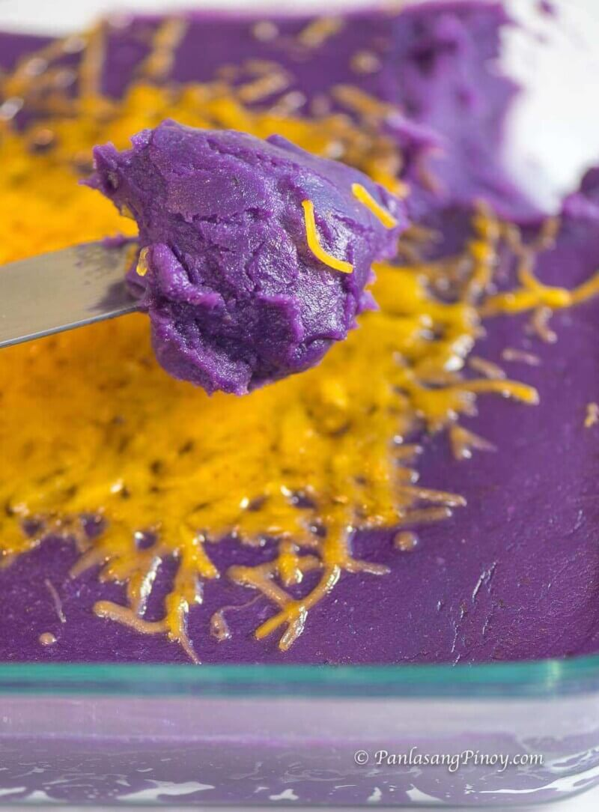

Ube Halaya with Cheese

Ingredients
- 1 lb. grated purple yam
- 1 14 oz. can condensed milk
- 2 cups coconut milk
- 3 tablespoons butter
- 1 teaspoon ube flavoring
- 1/2 cup shredded cheddar cheese
Instructions
- Pour coconut milk in a cooking pot. Let boil.
- Stir and add the condensed milk.
- Once the mixture starts to boil, add the grated purple yam and ube flavoring. Continue to cook in medium heat while continuously stirring for 30 minutes.
- Add butter. Stir. Cook until the mixture reaches your desired thickness. (I usually cook it for 10 to 12 minutes after adding butter).
- Transfer to a container. Top with shredded cheese. Serve. Share and enjoy!